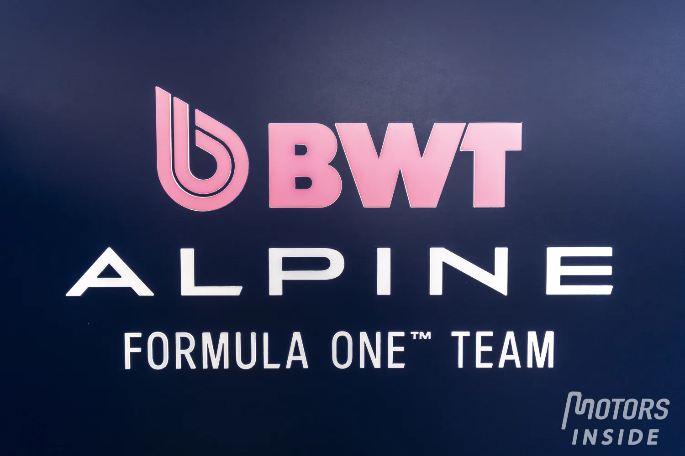

Identidad Francesa
Alpine F1 Team es una escudería francesa perteneciente al Grupo Renault. Aunque su identidad es francesa, la sede principal del equipo se encuentra en Enstone, Reino Unido, donde se desarrolla gran parte del chasis y la estructura del monoplaza.
Los orígenes del equipo
La historia del actual Alpine F1 Team está relacionada directamente con Renault y con la estructura que anteriormente compitió bajo los nombres Benetton y Renault. El equipo tiene una larga trayectoria dentro de la Fórmula 1 y ha pasado por diferentes etapas antes de adoptar definitivamente el nombre Alpine.
El regreso de Renault
Renault regresó como equipo oficial a la Fórmula 1 en 2002 después de adquirir la estructura de Benetton. Durante esta etapa, la escudería logró convertirse en una de las grandes protagonistas de la categoría gracias a un proyecto técnico competitivo y a la llegada de Fernando Alonso.
Los campeonatos de 2005 y 2006
Uno de los períodos más exitosos del equipo llegó entre 2005 y 2006. Renault consiguió el Campeonato de Constructores en ambas temporadas, mientras que Fernando Alonso obtuvo el Campeonato Mundial de Pilotos en 2005 y 2006.
Estos campeonatos forman parte del legado histórico de Renault y de la estructura que posteriormente pasó a competir bajo el nombre Alpine.
El nacimiento de Alpine (2021)
En 2021, el Grupo Renault decidió cambiar el nombre de su equipo de Fórmula 1 para utilizar la marca Alpine, conocida por sus automóviles deportivos de origen francés. Con este cambio nació oficialmente Alpine F1 Team.
El equipo comenzó esta nueva etapa con Fernando Alonso y Esteban Ocon como pilotos. El monoplaza adoptó una imagen principalmente azul, asociada con la identidad de Alpine y con la tradición automovilística francesa.
Victoria en el Gran Premio de Hungría
El primer gran éxito de Alpine llegó en el Gran Premio de Hungría de 2021. Esteban Ocon consiguió la victoria después de una carrera llena de incidentes y cambios en las posiciones.
Esta fue la primera victoria de Alpine desde que Renault cambió el nombre del equipo y se convirtió en uno de los momentos más importantes de la historia reciente de la escudería.
La etapa de Fernando Alonso
Fernando Alonso regresó a Renault en 2021, coincidiendo con el nacimiento de Alpine. Durante su etapa con el equipo consiguió varios resultados importantes y ayudó a desarrollar el proyecto durante sus primeros años.
En 2022, Alonso consiguió podios con Alpine y terminó la temporada demostrando que todavía podía competir al más alto nivel. Al finalizar ese año decidió abandonar el equipo para incorporarse a Aston Martin.
Pierre Gasly y Esteban Ocon
Después de la salida de Fernando Alonso, Alpine continuó con Esteban Ocon y Pierre Gasly como pilotos. La llegada de Gasly permitió al equipo contar con dos pilotos franceses, algo especialmente representativo para una escudería que busca mantener una fuerte identidad francesa.
Ocon y Gasly consiguieron algunos resultados destacados, aunque Alpine también atravesó temporadas con problemas de rendimiento y dificultades para mantenerse de forma constante en la lucha por las posiciones delanteras.
Cambios en la dirección
En los últimos años, Alpine ha realizado diferentes cambios dentro de su estructura deportiva y administrativa con el objetivo de mejorar su rendimiento. Flavio Briatore regresó al equipo como asesor ejecutivo y asumió un papel importante dentro de la reorganización del proyecto.
Cambio técnico en 2026
Uno de los cambios más importantes para Alpine llegó con el abandono del programa de motores Renault. A partir de 2026, Alpine utiliza unidades de potencia Mercedes como equipo cliente.
Este cambio coincide con la entrada en vigor de una nueva generación de reglamentos técnicos en la Fórmula 1, por lo que Alpine busca aprovechar esta nueva etapa para mejorar su rendimiento y acercarse nuevamente a los equipos que luchan por las primeras posiciones.
Liderazgo y pilotos
El proyecto de Alpine está dirigido con el objetivo de construir una estructura competitiva a largo plazo. Pierre Gasly continúa siendo una de las principales figuras del equipo, acompañado en la temporada 2026 por Franco Colapinto.
El futuro de Alpine
Alpine todavía no ha conseguido un Campeonato Mundial de Constructores ni un Campeonato Mundial de Pilotos bajo su nombre actual. Sin embargo, cuenta con el importante legado de Renault y con una victoria obtenida desde su creación en 2021.
El objetivo del equipo es aprovechar su experiencia, sus recursos técnicos y el cambio de reglamento para convertirse nuevamente en una escudería capaz de luchar por victorias y, en el futuro, por campeonatos mundiales.